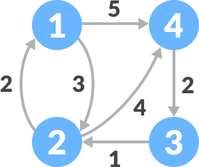

首页 > 编程笔记
弗洛伊德算法（求最短路径）
在一个加权图中，如果想找到各个顶点之间的最短路径，可以考虑使用弗洛伊德算法。
弗洛伊德算法既适用于无向加权图，也适用于有向加权图。使用弗洛伊德算法查找最短路径时，只允许环路的权值为负数，其它路径的权值必须为非负数，否则算法执行过程会出错。
1) 建立一张表格，记录每个顶点直达其它所有顶点的权值：
从各个顶点出发，途径顶点 1 再到达其它顶点的路径以及对应的权值分别是：
以上所有的路径中，没有比表 1 中记录的权值最小的路径，所以不需要对表 1 进行更新。
3) 在表 1 的基础上，以顶点 2 作为 "中间顶点"，计算从各个顶点出发途径顶点 2 再到达其它顶点的权值：
以顶点 2 作为 "中间顶点"，我们找到了比 3-1、3-4 更短的路径，对表 1 进行更新：
4) 在表 2 的基础上，将顶点 3 作为 "中间顶点"，计算从各个顶点出发途径顶点 3 再到达其它顶点的权值：
以顶点 3 作为 "中间顶点"，我们找到了比 4-1、4-2 更短的路径，对表 2 进行更新：
5) 在表 3 的基础上，将顶点 4 作为 "中间顶点"，计算从各个顶点出发途径顶点 4 再到达其它顶点的权值：
以顶点 4 作为 "中间顶点"，我们找到了比 1-3、2-3 更短的路径，对表 3 进行更新：
通过将所有的顶点分别作为“中间顶点”，最终得到的表 4 就记录了各个顶点之间的最短路径。例如，4-1 的最短路径为 4-3-2-1。
如下是用弗洛伊德算法查找图 1 中各顶点之间最短路径的 C 语言程序：
如下是用弗洛伊德算法查找图 1 中各顶点之间最短路径的 Java 程序：
如下是用弗洛伊德算法查找图 1 中各顶点之间最短路径的 Python 程序：
以上程序的输出结果均为：
弗洛伊德算法既适用于无向加权图，也适用于有向加权图。使用弗洛伊德算法查找最短路径时，只允许环路的权值为负数，其它路径的权值必须为非负数，否则算法执行过程会出错。
弗洛伊德算法的实现思路
弗洛伊德算法是基于动态规划算法实现的，接下来我们以在图 1 所示的有向加权图中查找各个顶点之间的最短路径为例，讲解弗洛伊德算法的实现思路。

图 1 有向加权图
图 1 有向加权图
弗洛伊德算法查找图 1 中各个顶点之间的最短路径，实现过程如下：图 1 中不存在环路，且所有路径（边）的权值都为正数，因此可以使用弗洛伊德算法。
1) 建立一张表格，记录每个顶点直达其它所有顶点的权值：
| 目标顶点 | |||||
|---|---|---|---|---|---|
| 1 | 2 | 3 | 4 | ||
| 起始顶点 | 1 | 0 | 3 | ∞ | 5 |
| 2 | 2 | 0 | ∞ | 4 | |
| 3 | ∞ | 1 | 0 | ∞ | |
| 4 | ∞ | ∞ | 2 | 0 | |
2) 在表 1 的基础上，将顶点 1 作为 "中间顶点"，计算从各个顶点出发途径顶点 1 再到达其它顶点的权值，如果比表 1 中记录的权值更小，证明两个顶点之间存在更短的路径，对表 1 进行更新。起始顶点指的是从哪个顶点出发，目标顶点指的是要达到的顶点，例如 2->1 路径的权值是 2，顶点 2 是起始顶点，顶点 1 是目标顶点。此外，∞ 表示无穷大的数，即顶点之间不存在直达的路径。
从各个顶点出发，途径顶点 1 再到达其它顶点的路径以及对应的权值分别是：
- 2-1-3：权值为 2 + ∞ = ∞，表 1 中记录的 2-3 的权值也是 ∞；
- 2-1-4：权值为 2 + 5 = 7，表 1 中记录的 2-4 的权值是 4；
- 3-1-2：权值为 ∞ + 3，表 1 中记录的 3-2 的权值是 1；
- 3-1-4：权值为 ∞ + 5，表 1 中记录的 3-4 的权值是 ∞；
- 4-1-2：权值为 ∞ + 3，表 1 中记录的 4-2 的权值是 ∞；
- 4-1-3：权值为 ∞ + ∞，表 1 中记录的 4-3 的权值是 2。
以上所有的路径中，没有比表 1 中记录的权值最小的路径，所以不需要对表 1 进行更新。
3) 在表 1 的基础上，以顶点 2 作为 "中间顶点"，计算从各个顶点出发途径顶点 2 再到达其它顶点的权值：
- 1-2-3：权值为 3 + ∞，表 1 中记录的 1-3 的权值为 ∞；
- 1-2-4：权值为 3 + 4 = 7，表 1 中 1-4 的权值为 5；
- 3-2-1：权值为 1 + 2 = 3，表 1 中 3-1 的权值为 ∞，3 < ∞；
- 3-2-4：权值为 1 + 4 = 5，表 1 中 3-4 的权值为 ∞，5 < ∞；
- 4-2-1：权值为 ∞ + 2，表 1 中 4-1 的权值为 ∞；
- 4-2-3：权值为 ∞ + ∞，表 1 中 4-3 的权值为 2。
以顶点 2 作为 "中间顶点"，我们找到了比 3-1、3-4 更短的路径，对表 1 进行更新：
| 目标顶点 | |||||
|---|---|---|---|---|---|
| 1 | 2 | 3 | 4 | ||
| 起始顶点 | 1 | 0 | 3 | ∞ | 5 |
| 2 | 2 | 0 | ∞ | 4 | |
| 3 | 3（3-2-1） | 1 | 0 | 5（3-2-4） | |
| 4 | ∞ | ∞ | 2 | 0 | |
4) 在表 2 的基础上，将顶点 3 作为 "中间顶点"，计算从各个顶点出发途径顶点 3 再到达其它顶点的权值：
- 1-3-2 权值为 ∞ + 1，表 2 中 1-2 的权值为 3；
- 1-3-4 权值为 ∞ + 5，表 2 中 1-4 的权值为 5；
- 2-3-1 权值为 ∞ + 3，表 2 中 2-1 的权值为 2；
- 2-3-4 权值为 ∞ + 5，表 2 中 2-4 的权值为 4；
- 4-3-1 权值为 2 + 3 = 5，表 2 中 4-1 的权值为 ∞，5 < ∞；
- 4-3-2 权值为 2 + 1 = 3，表 2 中 4-2 的权值为 ∞，3 < ∞；
以顶点 3 作为 "中间顶点"，我们找到了比 4-1、4-2 更短的路径，对表 2 进行更新：
| 目标顶点 | |||||
|---|---|---|---|---|---|
| 1 | 2 | 3 | 4 | ||
| 起始顶点 | 1 | 0 | 3 | ∞ | 5 |
| 2 | 2 | 0 | ∞ | 4 | |
| 3 | 3（3-2-1） | 1 | 0 | 5（3-2-4） | |
| 4 | 5（4-3-2-1） | 3（4-3-2） | 2 | 0 | |
5) 在表 3 的基础上，将顶点 4 作为 "中间顶点"，计算从各个顶点出发途径顶点 4 再到达其它顶点的权值：
- 1-4-2 权值为 5 + 3 = 8，表 3 中 1-2 的权值为 3；
- 1-4-3 权值为 5 + 2 = 7，表 3 中 1-3 的权值为 ∞，7 < ∞；
- 2-4-1 权值为 4 + 5 = 9，表 3 中 2-1 的权值为 2；
- 2-4-3 权值为 4 + 2 = 6，表 3 中 2-3 的权值为 ∞，6 < ∞；
- 3-4-1 权值为 4 + 5 = 9，表 3 中 3-1 的权值为 3；
- 3-4-2 权值为 5 + 5 = 10 ，表 3 中 3-2 的权值为 1。
以顶点 4 作为 "中间顶点"，我们找到了比 1-3、2-3 更短的路径，对表 3 进行更新：
| 目标顶点 | |||||
|---|---|---|---|---|---|
| 1 | 2 | 3 | 4 | ||
| 起始顶点 | 1 | 0 | 3 | 7（1-4-3） | 5 |
| 2 | 2 | 0 | 6（2-4-3） | 4 | |
| 3 | 3（3-2-1） | 1 | 0 | 5（3-2-4） | |
| 4 | 5（4-3-2-1） | 3（4-3-2） | 2 | 0 | |
通过将所有的顶点分别作为“中间顶点”，最终得到的表 4 就记录了各个顶点之间的最短路径。例如，4-1 的最短路径为 4-3-2-1。
弗洛伊德算法的具体实现
了解了弗洛伊德算法查找最短路径的实现思路后，接下来仍以图 1 为例，分别编写 C、Java、Python 程序实现弗洛伊德算法。如下是用弗洛伊德算法查找图 1 中各顶点之间最短路径的 C 语言程序：
#include <stdio.h>
#define V 4 //设定图中的顶点数
#define INF 65535 // 设置一个最大值
int P[V][V] = { 0 }; //记录各个顶点之间的最短路径
void printMatrix(int matrix[][V]); //输出各个顶点之间的最短路径
void printPath(int i, int j); // 递归输出各个顶点之间最短路径的具体线路
void floydWarshall(int graph[][V]); // 实现弗洛伊德算法
int main() {
// 有向加权图中各个顶点之间的路径信息
int graph[V][V] = { {0, 3, INF, 5},
{2, 0, INF, 4},
{INF, 1, 0, INF},
{INF, INF, 2, 0} };
floydWarshall(graph);
}
// 中序递归输出各个顶点之间最短路径的具体线路
void printPath(int i, int j)
{
int k = P[i][j];
if (k == 0)
return;
printPath(i, k);
printf("%d-", k + 1);
printPath(k, j);
}
// 输出各个顶点之间的最短路径
void printMatrix(int graph[][V]) {
int i, j;
for (i = 0; i < V; i++) {
for (j = 0; j < V; j++) {
if (j == i) {
continue;
}
printf("%d - %d: 最短路径为:", i + 1, j + 1);
if (graph[i][j] == INF)
printf("%s\n", "INF");
else {
printf("%d", graph[i][j]);
printf("，依次经过：%d-", i + 1);
//调用递归函数
printPath(i, j);
printf("%d\n", j + 1);
}
}
}
}
// 实现弗洛伊德算法,graph[][V] 为有向加权图
void floydWarshall(int graph[][V]) {
int i, j, k;
//遍历每个顶点，将其作为其它顶点之间的中间顶点，更新 graph 数组
for (k = 0; k < V; k++) {
for (i = 0; i < V; i++) {
for (j = 0; j < V; j++) {
//如果新的路径比之前记录的更短，则更新 graph 数组
if (graph[i][k] + graph[k][j] < graph[i][j]) {
graph[i][j] = graph[i][k] + graph[k][j];
//记录此路径
P[i][j] = k;
}
}
}
}
// 输出各个顶点之间的最短路径
printMatrix(graph);
}
如下是用弗洛伊德算法查找图 1 中各顶点之间最短路径的 Java 程序：
public class Floyd {
static int V = 4; // 顶点的个数
static int[][] P = new int[V][V]; // 记录各个顶点之间的最短路径
static int INF = 65535; // 设置一个最大值
// 中序递归输出各个顶点之间最短路径的具体线路
public static void printPath(int i, int j) {
int k = P[i][j];
if (k == 0)
return;
printPath(i, k);
System.out.print((k + 1) + "-");
printPath(k, j);
}
// 输出各个顶点之间的最短路径
public static void printMatrix(int[][] graph) {
for (int i = 0; i < V; i++) {
for (int j = 0; j < V; j++) {
if (j == i) {
continue;
}
System.out.print((i + 1) + " - " + (j + 1) + "：最短路径为:");
if (graph[i][j] == INF)
System.out.println("INF");
else {
System.out.print(graph[i][j]);
System.out.print("，依次经过：" + (i + 1) + "-");
// 调用递归函数
printPath(i, j);
System.out.println((j + 1));
}
}
}
}
// 实现弗洛伊德算法,graph[][V] 为有向加权图
public static void floydWarshall(int[][] graph) {
int i, j, k;
// 遍历每个顶点，将其作为其它顶点之间的中间顶点，更新 graph 数组
for (k = 0; k < V; k++) {
for (i = 0; i < V; i++) {
for (j = 0; j < V; j++) {
// 如果新的路径比之前记录的更短，则更新 graph 数组
if (graph[i][k] + graph[k][j] < graph[i][j]) {
graph[i][j] = graph[i][k] + graph[k][j];
// 记录此路径
P[i][j] = k;
}
}
}
}
// 输出各个顶点之间的最短路径
printMatrix(graph);
}
public static void main(String[] args) {
// 有向加权图中各个顶点之间的路径信息
int[][] graph = new int[][] { { 0, 3, INF, 5 }, { 2, 0, INF, 4 }, { INF, 1, 0, INF }, { INF, INF, 2, 0 } };
floydWarshall(graph);
}
}
如下是用弗洛伊德算法查找图 1 中各顶点之间最短路径的 Python 程序：
V = 4 # 顶点的个数
INF = 65535 # 设定一个最大值
P = [[0]*V for i in range(V)] # 记录各个顶点之间的最短路径
# 有向加权图中各个顶点之间的路径信息
graph = [[0, 3, INF, 5],
[2, 0, INF, 4],
[INF, 1, 0, INF],
[INF, INF, 2, 0]]
# 中序递归输出各个顶点之间最短路径的具体线路
def printPath(i,j):
k = P[i][j]
if k == 0:
return;
printPath(i , k)
print("%d-" % (k + 1) , end='')
printPath(k , j)
# 输出各个顶点之间的最短路径
def printMatrix(graph):
for i in range(V):
for j in range(V):
if j == i:
continue
print("%d - %d: 最短路径为:"%(i + 1, j + 1) , end='')
if graph[i][j] == INF:
print("INF")
else:
print(graph[i][j] , end='')
print("，依次经过：%d-"%(i+1) , end='')
# 调用递归函数
printPath(i , j)
print(j + 1)
# 实现弗洛伊德算法,graph[][V] 为有向加权图
def floydWarshall(graph):
# 遍历每个顶点，将其作为其它顶点之间的中间顶点，更新 graph 数组
for k in range(V):
for i in range(V):
for j in range(V):
# 如果新的路径比之前记录的更短，则更新 graph 数组
if graph[i][k] + graph[k][j] < graph[i][j]:
graph[i][j] = graph[i][k] + graph[k][j]
# 记录此路径
P[i][j] = k
# 输出各个顶点之间的最短路径
printMatrix(graph)
floydWarshall(graph)
以上程序的输出结果均为：
1 - 2: 最短路径为:3，依次经过：1-2
1 - 3: 最短路径为:7，依次经过：1-4-3
1 - 4: 最短路径为:5，依次经过：1-4
2 - 1: 最短路径为:2，依次经过：2-1
2 - 3: 最短路径为:6，依次经过：2-4-3
2 - 4: 最短路径为:4，依次经过：2-4
3 - 1: 最短路径为:3，依次经过：3-2-1
3 - 2: 最短路径为:1，依次经过：3-2
3 - 4: 最短路径为:5，依次经过：3-2-4
4 - 1: 最短路径为:5，依次经过：4-3-2-1
4 - 2: 最短路径为:3，依次经过：4-3-2
4 - 3: 最短路径为:2，依次经过：4-3
关注公众号「站长严长生」，在手机上阅读所有教程，随时随地都能学习。内含一款搜索神器，免费下载全网书籍和视频。

微信扫码关注公众号